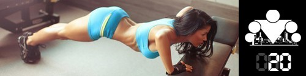

100 Дневный воркаут
<==== Вернуться к оглавлению
День 20. Как вернуться к тренировкам после перерыва

Если травмы и болезни неизбежны, то очень важным становится вопрос правильного (!) возвращения к тренировкам после них, именно об этом и поговорим сегодня!
Самый главный момент о котором нужно помнить, возвращаясь к тренировкам после перерыва это то, что вы на самом деле стали слабее, чем были до перерыва. Это простой, очевидный факт, который, к сожалению, многие напрочь отказываются принимать во внимание.
Вместо того, чтобы стараться как можно быстрее вернуться к своим прежним результатам, смиритесь с вашим текущим уровнем и начинайте двигаться от него. Зачем становиться заложником прошлого, когда живёшь в настоящем? А вы знали, что травмы, полученные во время возвращения к тренировкам после перерыва являются одними из наиболее распространенных? И я уверен, что никому не хочется после нескольких дней/недель перерыва, снова выпасть из тренировочного графика из-за собственной нетерпеливости.
В тренировках после перерыва всегда следует придерживаться принципа - лучше меньше, чем больше. Лучше дать немного меньшую нагрузку, дать себе немного больше времени на возвращение в строй, но зато гарантированно не получить дополнительных травм, перегрузив организм. Лично я обычно начинаю с 25% той нагрузки, которую давал до перерыва. В зависимости от самочувствия через несколько тренировок увеличивают до 50%, затем так же до 75% и затем до 100%. Тут нельзя дать точного количества тренировок или дней, всё индивидуально, и вам нужно научиться понимать, когда уже можно двигаться дальше, а когда требуется подождать. Опять же всё зависит от того, сколько дней тренировок вы пропустили и по какой причине.
Одно дело, когда у вас выдалась напряженная неделя и действительно было сложно найти время для занятий, хотя вы абсолютно здоровы. Другое, когда вы простудились или пролежали несколько дней с температурой дома. Третье, если вы получили растяжение или ещё каким-либо образом травмировались. Здесь так нет и не может быть общих рекомендаций, и если травма не проходит за неделю, то следует обратиться к врачу и понять, в чём причина, а затем следовать рекомендациям. Если хотите тренироваться, то следует обращаться к спортивным врачам, потому что их специализация, в отличии от обычных, как раз заключается в том, чтобы как можно быстрее вернуть вас в строй.
В любом случае, в тренировках после перерыва основной акцент должен быть сделан на разминку/заминку, и в меньшей степени на тренировочный объём. Когда вы регулярно тренируетесь, то ваше тело постоянно находится в состоянии готовности, но когда вы делаете перерыв (тем более, если он длится больше недели), то организм теряет это состояние готовности. чтобы вернуть его обратно в "боевой" режим потребуется больше времени, чем обычно. Не забывайте об этом.
Если говорить непосредственно про наш
100-дневный воркаут
, то я бы рекомендовал возвращаться в строй со стартового количества кругов (2-4) и уменьшенного количества повторений. Это очень общая рекомендация, поэтому я объясню логику, которая за ней стоит, чтобы вы могли сами принять решение.
Наша программа изначально предполагает такие тренировочные объёмы, чтобы вы могли заниматься каждый день и при этом успевали восстанавливаться за 24 часа между тренировками (примерно). В этом её несомненное преимущество, которое так же позволяет вам довольно быстро вернуться к тому моменту, когда пришлось прервать свои тренировки. С другой стороны, наша программа построена вокруг 4-х базовых упражнений, объединенных в систему круговых тренировок, и максимальную пользу они дают именно в такой связке. То есть организовать своё возвращение я бы рекомендовал выполняя полностью все круги, но с меньшим числом повторений. Вы сможете делать все упражнения (а значит мышцы будут в работе), но при этом у вас будет время на отдых между кругами, и в общей сумме вы сможете сделать больше, чем если попробуете делать по-максимуму, но меньшее количество кругов. Возможно, я довольно консервативен в этом вопросе, но я бы придерживался именно такого подхода.
Что касается конкретного числа повторений - то тут я вам не советчик. Одна из задач 100-дневного воркаута заключается именно в том, чтобы научить вас лучше понимать свой организм и взаимодействовать с ним, а этого можно достичь только путём проб и ошибок.
Надеюсь, что мне удалось ответить на поставленный вопрос, ну а всем нашим участникам я желаю крепкого здоровья, потому что впереди ещё долгий путь ;)
======> День 21. Правило 10 000 часов